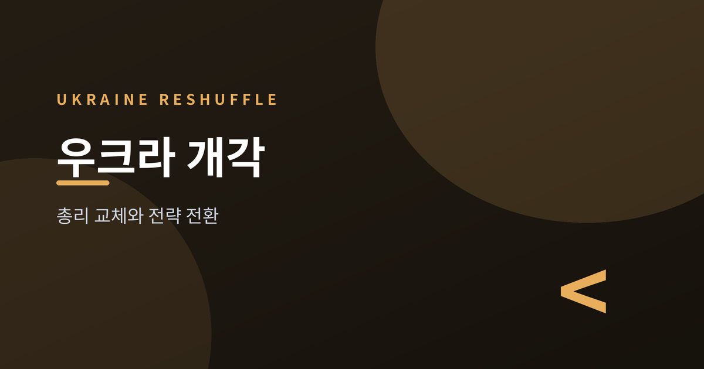
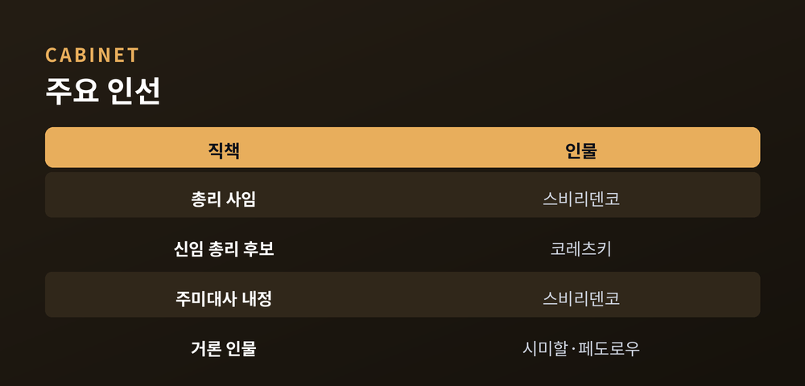
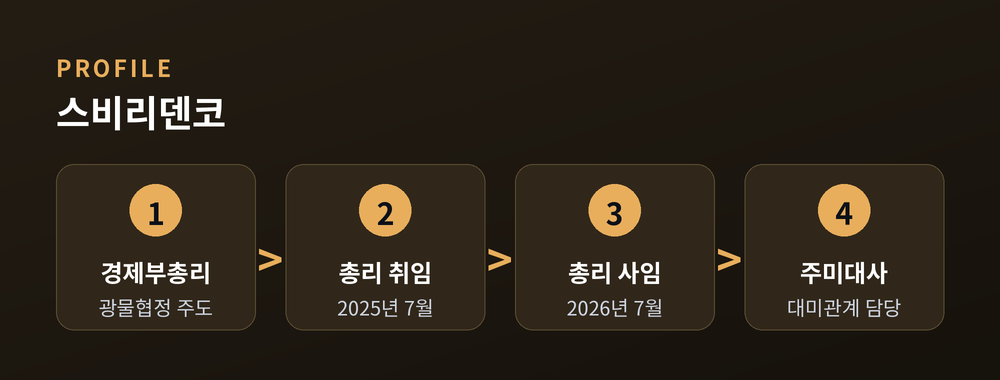
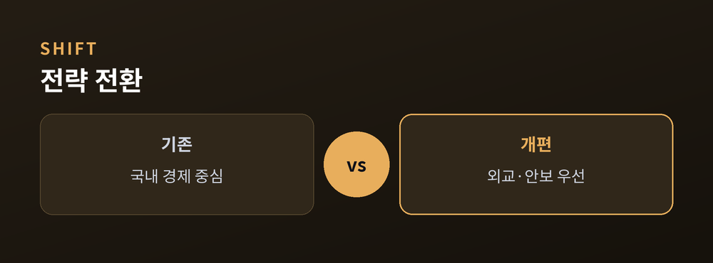
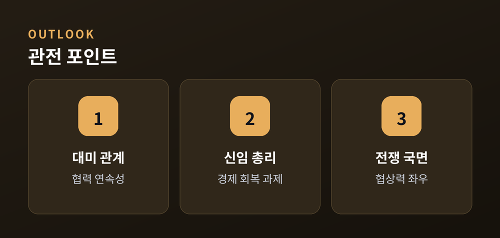

취임 1년 만의 개각, 무엇을 노리나

우크라이나 정부에 다시 인적 개편의 바람이 불었습니다. 볼로디미르 젤렌스키 대통령은 2026년 7월 12일 대대적인 내각 개편을 예고하며, 취임 1년을 맞은 율리아 스비리덴코 총리의 교체를 발표했습니다. 문책성 인사가 아닌 '새로운 정치 전략'이 배경이라는 점에서 주목을 받고 있습니다.
젤렌스키 대통령은 스비리덴코 총리와 면담한 뒤 그의 사임과 함께 내각·일부 사정기관 수장의 교체를 함께 발표했습니다. 스비리덴코 총리는 2025년 7월 데니스 시미할 전 총리의 뒤를 이어 취임한 지 약 1년 만에 물러나게 됐습니다. 대통령은 이번 개편이 무능이나 부패 때문이 아니라, 국면 변화에 맞춘 재편이라는 점을 분명히 했습니다.
후임 총리로는 국영 에너지기업 나프토가스의 세르히 코레츠키 최고경영자가 유력하게 거론됩니다. 이 밖에 시미할 현 에너지장관, 미하일로 페도로우 국방장관, 이호르 테레호우 하르키우 시장 등도 후보로 언급됐습니다.

스비리덴코 총리는 총리 취임 전 경제부총리로서 미국과 우크라이나 사이의 핵심광물 협정 협상을 주도한 인물입니다. 이 협정은 한때 냉랭했던 양국 관계를 푸는 실마리가 됐다는 평가를 받았습니다. 젤렌스키 대통령은 그에게 '핵심 파트너와의 관계를 이끄는 새롭고 중요한 역할'을 제안했다고 밝혔으며, 복수의 우크라이나 의원은 그가 주미대사로 향할 것이라고 전했습니다.

이번 개편의 핵심은 사람보다 '방향'에 있습니다. 대통령은 주요 외교 현안마다 경험 있는 책임자를 배치해 정상 차원의 합의를 실행에 옮기겠다고 설명했습니다. 즉 내정보다 외교·안보를 앞세우겠다는 신호로 읽힙니다.
"각 우선 외교 방향은 합의를 이행할 역량을 갖춘 인물이 맡게 될 것입니다."
미국 뉴욕타임스는 이번 인사가 전쟁 흐름이 우크라이나에 다소 유리하게 바뀐 상황과 무관하지 않다고 분석했습니다. 다만 전황과 협상의 향방은 여전히 유동적인 만큼, 해석에는 신중할 필요가 있습니다.

관전 포인트는 크게 셋입니다. 첫째, 대미 관계입니다. 광물 협정을 이끈 스비리덴코가 워싱턴으로 향한다면, 양국 협력의 연속성이 유지될지가 관건입니다. 둘째, 신임 총리의 과제입니다. 에너지·경제 회복이라는 무거운 짐이 놓여 있습니다. 셋째, 전쟁 국면입니다. 개편된 내각이 향후 협상력에 어떤 영향을 줄지 지켜봐야 합니다.
인선 절차는 의회 표결을 거쳐야 확정됩니다. 세부 명단과 시점은 유동적이므로, 확정 발표를 기다릴 필요가 있습니다.

정리하면, 이번 개각은 실패에 대한 문책이 아니라 전쟁 장기화 속 '전략의 재배치'에 가깝습니다. 인물의 이동보다, 그 이동이 가리키는 방향이 더 많은 것을 말해 줍니다. 우크라이나가 외교의 무게중심을 어디에 둘지, 그 답이 다음 몇 주 안에 조금씩 드러날 것입니다.
참고 소스